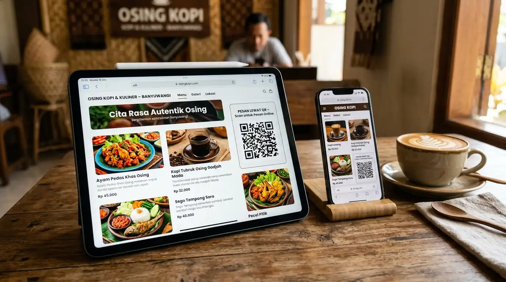

Daftar Isi Artikel Tutup
- 1. Algoritma Media Sosial Cepat Menenggelamkan Postingan
- 2. Orang yang Siap Membeli Mencari di Google Search & Google Maps
- 3. Website Mandiri Memberi Kredibilitas dan Status Resmi
- 4. Anda Tidak Pernah Memiliki Media Sosial Anda Sendiri
- 5. Alur Pemesanan Rapi Terhubung Otomatis ke WhatsApp
- Kesimpulan: Kombinasi Sinergis Medsos + Website
Banyak pemilik kedai kopi, toko pakaian, dan pengrajin di Banyuwangi menganggap: "Usaha saya sudah punya Instagram dan TikTok, buat apa keluar uang untuk bikin website lagi?"
Media sosial efektif untuk membangun awareness kilat, namun website mandiri mutlak dibutuhkan untuk menjaring pembeli berintensi tinggi dari Google Search & Maps, membangun kredibilitas legalitas, mengamankan data kepemilikan aset digital, dan mempermudah pesanan WhatsApp otomatis.
Memang benar bahwa media sosial adalah alat yang sangat efektif untuk membangun kesadaran merek (brand awareness) dan membagikan video pendek. Namun, mengandalkan 100% operasional bisnis hanya pada platform media sosial menyimpan risiko tersembunyi yang sering kali baru disadari saat omset penjualan mulai menurun. Berikut adalah 5 alasan mendasar mengapa bisnis lokal Anda tetap wajib memiliki website mandiri:
1. Algoritma Media Sosial Cepat Menenggelamkan Postingan
Umur tayang (lifespan) sebuah postingan di Instagram atau TikTok rata-rata hanya berkisar antara 6 hingga 24 jam. Setelah lewat waktu tersebut, foto menu atau promo produk Anda akan tenggelam ke bawah dan jarang dilihat lagi oleh pengguna baru kecuali Anda terus-menerus memproduksi konten setiap hari.
Sebaliknya, sebuah artikel atau halaman produk di website yang teroptimasi SEO lokal Google bersifat abadi (evergreen). Halaman tersebut dapat terus ditemukan calon pelanggan yang mencari di Google selama berbulan-bulan bahkan bertahun-tahun ke depan tanpa perlu Anda repot posting ulang.
2. Orang yang Siap Membeli Mencari di Google Search & Google Maps
Pikirkan kebiasaan Anda sendiri: saat Anda sedang bepergian ke luar kota dan ingin mencari "tempat makan enak di Banyuwangi" atau "kontraktor baja ringan Giri", di mana Anda mencarinya? Tentu di Google Search atau Google Maps, bukan menelusuri tagar di TikTok!
Pengguna media sosial membuka aplikasi saat bersantai atau mencari hiburan. Sebaliknya, orang yang mengetik di Google adalah calon pembeli dengan intensi belanja sangat tinggi (high buying intent). Jika bisnis Anda tidak memiliki website yang tercatat di Google, Anda kehilangan calon pembeli potensial tersebut kepada kompetitor.
3. Website Mandiri Memberi Kredibilitas dan Status Resmi
Di era maraknya penipuan online, calon pelanggan dan mitra korporat B2B sangat berhati-hati sebelum melakukan transfer uang. Akun media sosial bisa dibuat gratis oleh siapa saja dalam 2 menit. Namun, bisnis yang memiliki domain resmi (seperti .com atau .co.id) memancarkan sinyal keseriusan dan profesionalitas yang tak terbantahkan.

4. Anda Tidak Pernah Memiliki Media Sosial Anda Sendiri
Apakah Anda ingat apa yang terjadi pada toko-toko online yang menggantungkan seluruh penjualannya pada satu platform ketika aturan regulasi berubah mendadak? Akun Instagram atau TikTok Anda bisa sewaktu-waktu terkena suspended, pembatasan jangkauan (shadowban), atau perubahan algoritma tanpa peringatan sebelumnya.
Dengan memiliki website mandiri, Anda adalah pemilik sah aset digital Anda 100%. Data pengunjung, daftar produk, dan riwayat pesanan berada di bawah kendali Anda sendiri tanpa takut ditutup sepihak oleh pihak pengembang aplikasi.
5. Alur Pemesanan Rapi Terhubung Otomatis ke WhatsApp
Banyak admin medsos kewalahan membalas DM (Direct Message) yang berantakan: pembeli menanyakan harga yang sudah tertera, lupa menyebutkan varian, atau chat tertumpuk.
Dengan website katalog modern, pelanggan dapat memilih menu atau barang yang diinginkan, dan sistem akan merangkum pesanan menjadi format pesan teks terstruktur rapi yang dikirimkan ke WhatsApp kasir hanya dalam sekali klik.
Kesimpulan: Kombinasi Sinergis Medsos + Website
Solusi ideal bagi UMKM di Banyuwangi bukanlah memilih salah satu, melainkan menggabungkan keduanya: gunakan media sosial sebagai corong penarik perhatian (traffic generator), dan arahkan mereka ke tautan website resmi di bio profil Anda untuk melihat katalog lengkap dan menyelesaikan pesanan dengan cepat.
Ingin Membangun Website untuk Bisnis Lokal Anda?
Konsultasikan kebutuhan usaha Anda bersama tim OptiSitus Banyuwangi. Kami buatkan website ringan yang langsung terhubung ke WhatsApp dan mudah ditemukan di Google.
Chat Developer Sekarang (Gratis)